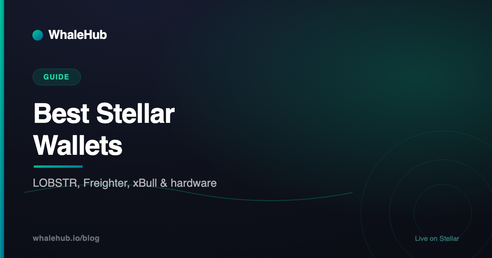

Best Stellar Wallets in 2026: LOBSTR, Freighter & More

Choosing a Stellar wallet is mostly about matching the tool to the job: holding and sending is a different problem from signing smart-contract calls, and both are different from securing a long-term balance. This guide walks through the main options, explains what Soroban support actually changes, and covers the three Stellar-specific concepts — trustlines, reserves, and memos — that catch out more newcomers than anything else.
How to choose, in one minute
Pick based on your primary use. For everyday holding and sending on a phone, a well-established mobile wallet is the right default. For interacting with Stellar DeFi applications in a browser, use an extension wallet with Soroban support. For a balance you would be upset to lose, use a hardware wallet as the signing device. Many people sensibly use two.
The mistake worth avoiding is treating "wallet" as one category. A wallet is really three separable things: a place your keys live, an interface for building transactions, and a connector that lets websites request signatures. Different products are strong at different parts of that stack.
- Holding & sending on mobile — an established non-custodial mobile wallet such as LOBSTR.
- Using DeFi apps in a browser — a Soroban-capable extension such as Freighter or xBull.
- Long-term storage of size — a hardware wallet, used as the signer behind one of the above.
- Shared or organisational funds — a multisig arrangement, not a single seed phrase.
Custodial, non-custodial, hardware
A custodial wallet means a company holds your keys and you hold an account with them. A non-custodial wallet means you hold the keys and bear full responsibility for them. A hardware wallet is a non-custodial wallet where the key never leaves a dedicated physical device, so malware on your computer cannot extract it.
The distinction is not academic — it determines who can freeze your funds, who can lose them, and who you call when something goes wrong.
| Type | Who holds the keys | Best for | Main risk |
|---|---|---|---|
| Custodial (exchange account) | The platform | Buying, selling, fiat on-ramps | Platform failure, freezes, withdrawal limits |
| Non-custodial software | You, on your device | Daily use, DeFi, self-sovereignty | Device compromise, lost seed phrase, phishing |
| Hardware | You, on a dedicated device | Long-term storage, large balances | Physical loss without backup; app support gaps |
| Multisig | Several parties, M-of-N | Shared funds, treasuries, high value | Setup complexity, coordination overhead |
An underrated Stellar feature is that multisig is native to the protocol, not bolted on with a smart contract. Any Stellar account can be configured with multiple signers and a required threshold at the ledger level. For anything organisational — a treasury, a shared fund, a business account — this is a far stronger arrangement than one seed phrase in one person's drawer.
The main Stellar wallets compared
LOBSTR is the most widely used Stellar wallet for everyday holding and sending across mobile and web. Freighter is the Stellar Development Foundation's browser extension, built for Soroban applications. xBull is a flexible extension with multi-account support. Hardware wallets sit behind these interfaces for larger balances.
The realistic shortlist, with what each is genuinely good at:
| Wallet | Form | Strong at | Consider that |
|---|---|---|---|
| LOBSTR | Mobile app, web, extension | The most polished everyday experience — clean asset management, built-in swaps, wide adoption | Its convenience features mean more surface area than a minimal signer |
| Freighter | Browser extension | Maintained by the Stellar Development Foundation; built with Soroban contract interaction as a first-class case | Extension-only, so it is a desktop-browser tool rather than a phone wallet |
| xBull | Browser extension, web | Multi-account handling and flexible signing options for people juggling several addresses | Smaller user base than the two above |
| Hardware (e.g. Ledger) | Physical device | Keys never touch an internet-connected machine — the strongest protection for a large balance | Smart-contract support on hardware devices has historically lagged classic operations; verify before relying on it |
| Native multisig | Account configuration | M-of-N approval enforced by the Stellar ledger itself, no contract required | Requires deliberate setup and a plan for signer loss |
Wallet capabilities change, sometimes quickly — Soroban support in particular has been a moving target across the ecosystem. Treat the table as a starting shortlist and confirm current feature support on each wallet's own documentation before committing meaningful funds. That advice applies doubly to hardware devices, where contract-signing support depends on the device's Stellar app version.
For reference, the WhaleHub app connects with Freighter, LOBSTR, xBull, and WalletConnect, which covers the common browser and mobile paths.
Why Soroban support matters
Classic Stellar operations like sending XLM or trading on the built-in order book work in almost any Stellar wallet. Soroban smart-contract calls are different: the wallet has to build a contract invocation, simulate it to work out the required resources, and present it for signing. A wallet without Soroban support simply cannot do this.
Stellar effectively has two transaction worlds. The classic world is the original ledger — payments, trustlines, order-book offers, account settings. It's been stable for years and every wallet handles it.
The Soroban world is the smart-contract layer, and it works differently under the hood. Contract calls have to be simulated against the network before submission to determine footprint and resource fees, and the resulting transaction looks nothing like a simple payment. Our Soroban explainer covers the architecture; the practical upshot for wallet choice is blunt:
- Just holding and sending XLM or USDC? Any reputable Stellar wallet works.
- Using an AMM, a lending protocol, or a yield optimiser? You need Soroban support, full stop.
- Not sure? If the application asks you to "connect wallet" and then approve something that isn't a plain payment, it's a contract call.
Trustlines: Stellar's opt-in system
A trustline is an explicit opt-in that lets your account hold a specific non-native asset. Stellar will not let anyone send you an asset you have not established a trustline for, which prevents unsolicited token spam. Each trustline raises your account's minimum XLM balance, and you can remove one once that asset's balance is zero.
This is the concept that most confuses people arriving from other chains, where any token can be pushed into your address whether you want it or not. Stellar inverts that: nothing lands in your account unless you've said yes to it first.
The practical consequences are worth knowing:
- Payments to you can fail. If someone sends you an asset you haven't trusted, the transaction doesn't go through. That's the system working, not a bug.
- You choose the issuer. A trustline names a specific asset code and a specific issuing account. Two different issuers can both mint something called "USD" — trusting the wrong one is a real risk, so verify the issuer address.
- Airdrop spam is largely solved. The scam pattern of dusting wallets with worthless tokens to bait interactions doesn't work well on Stellar.
- Trustlines are removable. Zero the balance and you can delete the trustline, reclaiming the reserve it held.
Most wallets add trustlines for you when you search for an asset or when an application prompts you. You'll typically approve a transaction to do it — that's normal.
XLM reserves and why funds look stuck
Stellar requires every account to hold a small XLM reserve to prevent ledger spam. A new account needs a base reserve to exist at all, and each additional item it stores — trustlines, open offers, extra signers, data entries — raises the requirement. That XLM isn't spent, but it can't be sent out while those items exist.
This produces a recurring confusion: your wallet shows an XLM balance, but you can't send all of it. Nothing is wrong. Part of that balance is reserved by the protocol, and the amount reserved grows with each trustline you add.
Two things follow. First, keep a small XLM buffer beyond what you plan to use — enough to cover the reserve for the assets you hold plus transaction fees, which on Stellar are famously tiny but not zero. Second, if you're clearing out an old account, removing unused trustlines frees up the reserve each one was holding.
The exact reserve amounts are network parameters that can be changed by validator consensus, so check the current values in the Stellar documentation rather than memorising a number.
Memos: the classic expensive mistake
Exchanges usually pool customer deposits into one Stellar account and use the memo field to identify which customer a payment belongs to. Sending without the required memo means the funds arrive at the exchange but aren't credited to you automatically. Recovery is normally possible through support, but it takes time and sometimes a fee.
This is the single most common way people "lose" XLM, and it's entirely avoidable. Whenever you withdraw to or deposit at an exchange, the platform will show both a Stellar address and a memo. Both are mandatory. Copy both.
Conversely, when someone sends you funds at your personal wallet, no memo is needed — memos are an exchange-side bookkeeping mechanism, not a Stellar-wide requirement. If a wallet warns you that a destination requires a memo, believe it; Stellar accounts can be flagged as memo-required precisely to prevent this error.
A security checklist
Write your recovery phrase on paper and never type it into a website, download wallets only from official links, verify what each transaction actually does before signing, keep large balances on hardware or multisig, and treat any unsolicited message offering help as an attack until proven otherwise.
The habits that matter, in order of how much loss they prevent:
- The recovery phrase never goes digital. Not in a password manager screenshot, not in a note, not in a cloud drive, and never into a form. Anyone asking for it is stealing from you — there are no exceptions to this rule.
- Install from official sources only. Fake wallet extensions are a persistent problem. Navigate from the project's own documentation rather than a search result or a link in a chat.
- Read the signature prompt. A good wallet tells you what a transaction does. If you're approving a contract call you don't understand, the correct response is to stop, not to click through.
- Split by purpose. A "hot" wallet with small working balances for daily DeFi, and a hardware or multisig arrangement for the bulk. Compromise of the first shouldn't touch the second.
- Nobody legitimate DMs you first. Support impersonation in Discord and Telegram is the dominant attack against retail crypto users. Real teams don't message you first offering to fix your wallet.
- Verify asset issuers. Before trusting an asset, confirm the issuing account matches what the project publishes on its own domain.
Once your wallet is set up and funded, our Stellar DeFi guide maps what's actually available to use, and how to stake AQUA walks through one concrete example end to end.
There is no single best Stellar wallet, only a best wallet for a given job. Get a Soroban-capable option for DeFi, keep a mobile wallet for everyday movement, put anything substantial behind hardware or multisig, and internalise the three Stellar-specific gotchas — trustlines, reserves, memos — before they cost you an afternoon of support tickets.
Frequently asked questions
What is the best Stellar wallet?
It depends on what you are doing. LOBSTR is the most widely used option for everyday holding and sending on mobile and web. Freighter, maintained by the Stellar Development Foundation, is a browser extension built for interacting with Soroban applications. xBull is a flexible extension with multi-account support. For long-term storage of a large balance, a hardware wallet paired with one of these interfaces is the safer choice.
What is a trustline on Stellar?
A trustline is an explicit opt-in that lets your account hold a specific non-native asset. Stellar will not let anyone send you an asset you have not established a trustline for, which prevents unsolicited token spam. Each trustline increases your account's minimum XLM balance requirement, and you can remove a trustline once the balance for that asset is zero.
Why does my Stellar account need a minimum XLM balance?
Stellar requires every account to hold a small reserve in XLM to prevent ledger spam. A new account needs a base reserve to exist, and each additional item it stores — trustlines, offers, extra signers, and data entries — raises that requirement further. The reserved XLM is not spent, but it cannot be transferred out while those items exist.
Do I need a Soroban-compatible wallet for Stellar DeFi?
Yes, for anything involving smart contracts. Classic Stellar operations like sending XLM or trading on the built-in order book work in almost any Stellar wallet, but Soroban smart-contract calls require a wallet that can build, simulate, and sign contract invocations. Check that a wallet advertises Soroban support before using it with a DeFi application.
What happens if I forget the memo when sending XLM to an exchange?
Exchanges typically pool user deposits into one Stellar account and use the memo field to identify which customer a deposit belongs to. Sending without the required memo means the funds arrive at the exchange but cannot be automatically credited to you. The money is usually recoverable through the exchange's support process, but it can take time and some platforms charge a recovery fee.
WhaleHub is a yield-optimization protocol on Stellar. We stake AQUA, aggregate ICE voting power, and auto-compound Aquarius rewards for stakers. This series explains the Stellar DeFi stack — protocols, tokens, and strategies — in plain English.
Read more


Your wallet's ready — now earn with it
Stake AQUA, receive BLUB as your liquid receipt, and let WhaleHub auto-compound Aquarius rewards on Stellar.
Launch the appThis article is for educational and informational purposes only and is general information, not financial, investment, or security advice. All wallets mentioned are third-party products not operated by WhaleHub; we do not endorse any specific provider, receive no compensation for these mentions, and cannot vouch for their security. Wallet features — particularly Soroban support — change over time, so verify current capabilities in each provider's own documentation before use. Network parameters such as reserve amounts are set by the Stellar network and can change. DeFi involves significant risk, including the potential total loss of capital. Do your own research before making decisions.